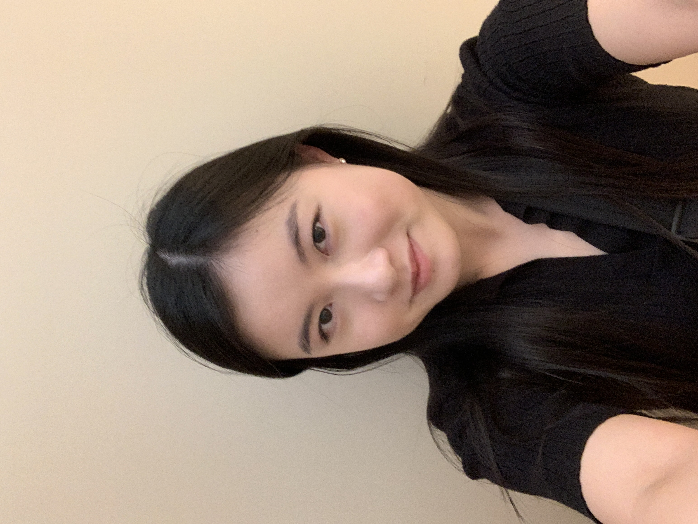

Hello! I am currently a third-year Computer Science major at University of California - Santa Cruz. I have experience with mobile and web development, along with programming in languages such as C, C++, Python, and much more! I am interested in software development, and how AI/ML can be used to improve digital technologies. I am interested in internships and other related opportunities! Some of my non-CS-related interests include photo and video editing and other Adobe technologies.